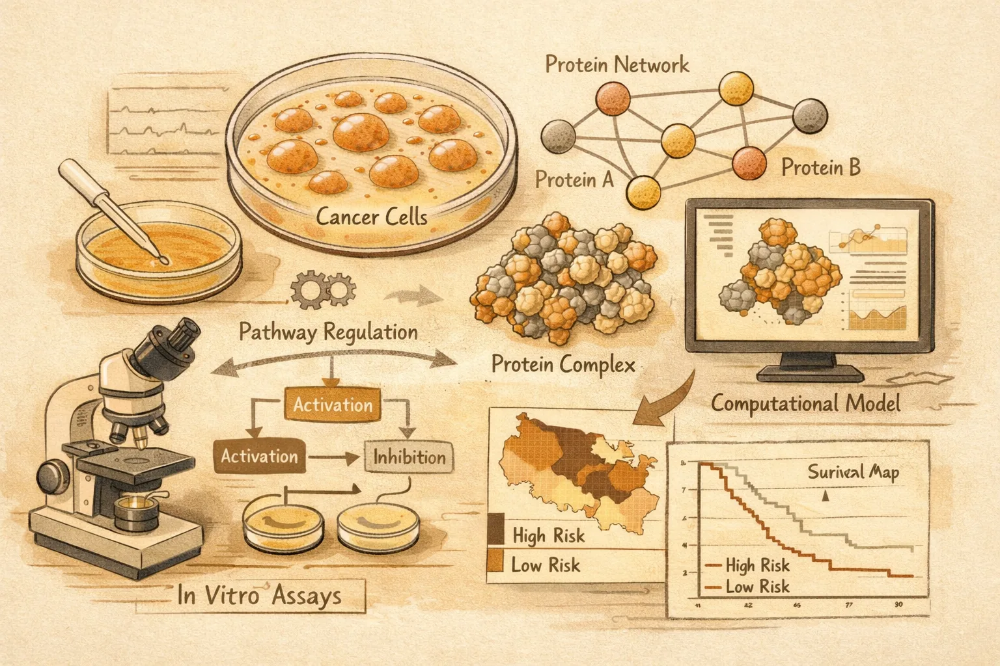

Atom-level enzyme active site scaffolding using RFdiffusion2
A generative protein-design model builds enzyme scaffolds directly around atomic active-site geometries, reducing a major bottleneck in de novo enzyme design.

Designing enzymes from scratch usually starts with a theozyme: an ideal arrangement of catalytic functional groups around a reaction transition state. Earlier AI methods could produce active enzymes, but they often required designers to predefine residue positions or reverse-build backbones from side-chain placements, limiting flexibility for complex active sites.
What they did
Ahern, Yim and colleagues developed RoseTTAFold diffusion 2, or RFdiffusion2, a flow-matching generative model trained on biomolecular structures from the Protein Data Bank. The model accepts atomic motifs, small molecules, metals and unindexed catalytic residues, then generates protein scaffolds without requiring the user to specify residue order or enumerate rotamers in advance.
Key finding
On a new 41-case atomic motif enzyme benchmark, RFdiffusion2 produced at least one in silico successful scaffold for all 41 active sites, compared with 16 of 41 for the previous RFdiffusion approach. In experimental campaigns, the team found active retroaldolase, cysteine hydrolase and zinc hydrolase designs after testing fewer than 96 proteins per case.
Why it matters
The result shifts enzyme design closer to a mechanism-first workflow: start with the chemistry, then let the model search for a compatible protein scaffold. That matters because programmable enzymes could support new routes for synthesis, catalysis and environmental chemistry, but only if computational design can handle atomic active sites with fewer manual assumptions.
The designed enzymes were active, but the authors note they are not as active as native enzymes. The AME benchmark is also based on PDB-derived motifs from native enzyme annotations, and it does not yet test enzymes with multiple transition states.
RFdiffusion2 does not make enzyme design solved, but it removes a key geometric constraint: catalytic atoms can be specified first, while residue identity and placement are inferred during scaffold generation.
The advance is not just better protein generation; it is a cleaner interface between chemical mechanism and protein structure.
Atom-level enzyme active site scaffolding using RFdiffusion2
Authors: Woody Ahern, Jason Yim, Doug Tischer, Saman Salike, Seth M. Woodbury, Donghyo Kim, Indrek Kalvet, Yakov Kipnis, Brian Coventry, Han Raut Altae-Tran, Magnus S. Bauer, Regina Barzilay, Tommi S. Jaakkola, Rohith Krishna and David Baker
Journal: Nature Methods